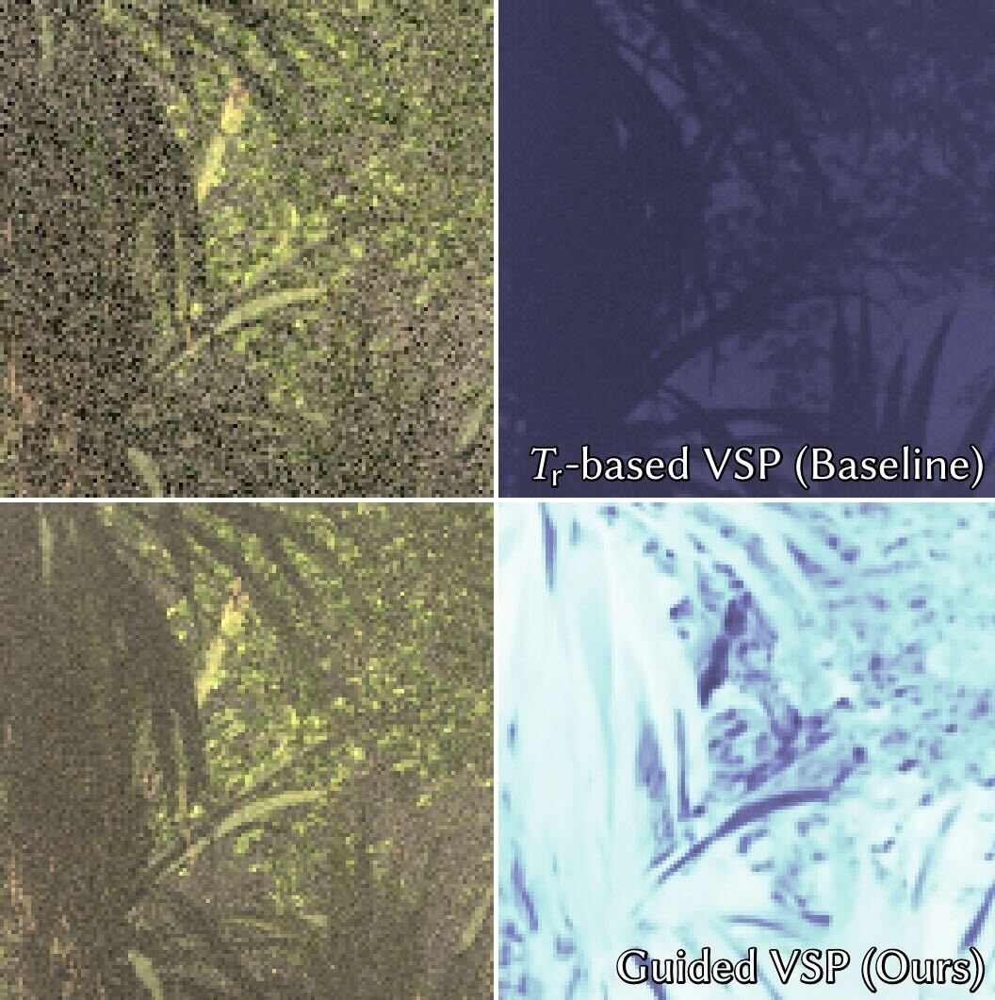

|
Kehan Xu
I am a first-year PhD student in computer science at Dartmouth College, advised by Prof. Wojciech Jarosz. I completed my master's degree in computer science at ETH Zurich, where I was fortunate enough to work with supervisors from Disney Research Zurich and Intel. I hold a bachelor's degree in computer science from Peking University.
Email /
Github /
LinkedIn
|
|
Research
My research focuses on physically-based rendering and light transport algorithms. I find rendering both fascinating and captivating, as it brings together diverse knowledge from physics, mathematics, computer science theory, and innovative software engineering techniques to create stunning visual effects.
|
|

|
Volume Scattering Probability Guiding
Kehan Xu,
Sebastian Herholz,
Marco Manzi,
Marios Papas,
Markus Gross
SIGGRAPH Asia, 2024
Our unbiased algorithm automatically approximates the optimal volume scattering probability for efficient volume rendering based on learned noise characteristics between volume and surface contributions.
|
Miscellaneous
In my leisure time, I enjoy creating digital illustrations and watching musicals.
I speak quite fluent Japanese.
|
|
{kind=link}